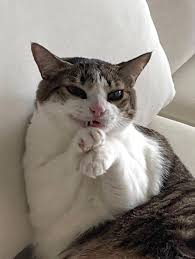
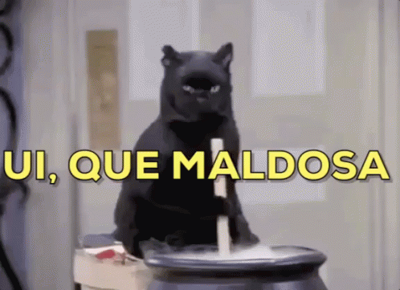

Mas afinal, o que seria gatinhos maus?
 Um gatinho "mal", no senso comum ou de forma bem-humorada, é aquele que tem comportamentos travessos, teimosos ou "arteiros", mas que geralmente são interpretados como parte do charme felino. Ele pode, por exemplo:
Apesar disso, esses comportamentos raramente vêm de "maldade" real — gatinhos não têm noção moral como os humanos. O que chamamos de "maldade" costuma ser resultado de curiosidade, energia acumulada, brincadeira ou falta de estímulo.
Então, um gatinho "mal" é mais uma forma divertida e carinhosa de se referir a um filhote sapeca que está explorando o mundo ao seu redor — mesmo que às custas dos seus vasos, cortinas e paciência!